| Name | Description |
|---|---|
| 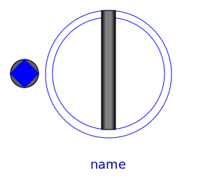 PartialAirGap | Partial airgap model |
| 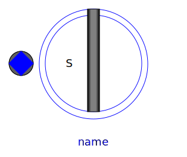 AirGapS | Airgap in stator-fixed coordinate system |
| 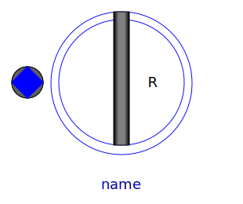 AirGapR | Airgap in rotor-fixed coordinate system |
| 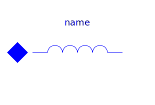 Inductor | Space phasor inductor |
|
|
Squirrel Cage |
| 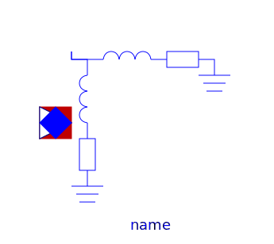 DamperCage | Squirrel Cage |
|
|
Electrical excitation |
| 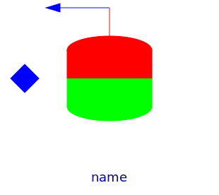 PermanentMagnet | Permanent magnet excitation |
| 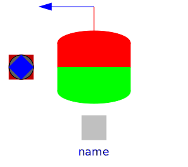 PermanentMagnetWithLosses | Permanent magnet excitation |
| 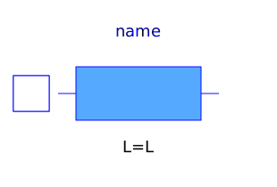 InductorDC | Ideal linear electrical inductor for electrical DC machines |
| 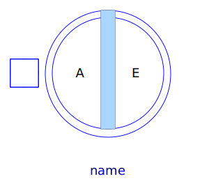 PartialAirGapDC | Partial airgap model of a DC machine |
| AirGapDC | Linear airgap model of a DC machine |
| 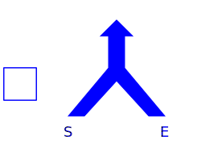 CompoundDCExcitation | Compound excitation = shunt + series |
| 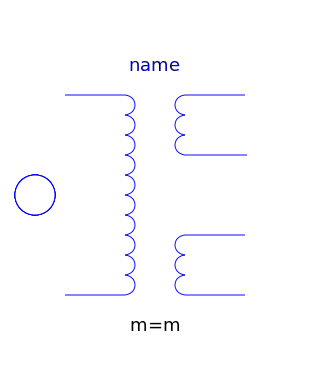 PartialCore | Partial model of transformer core with 3 windings |
| IdealCore | Ideal transformer with 3 windings |
| 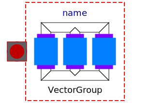 BasicTransformer | Partial model of three-phase transformer |